<title>Lamp Christmas Hats</title>
<link rel="stylesheet" href="https://fonts.googleapis.com/css2?family=Bricolage+Grotesque:wght@600;700&family=Figtree:wght@400;500&display=swap">
<style>
/* Layout: one column of rounds, newest first; each round is a 4-up grid of square photo cards */
:root{--bg:#f4f2ef;--fg:#1c1b1f;--muted:#68646d;--card:#ffffff;--line:#e2dee6;--flaw:#a3321f;--chosen:#1f6b45;--chosen-fg:#ffffff;
--display:"Bricolage Grotesque",system-ui,sans-serif;--body:"Figtree",system-ui,sans-serif}
@media (prefers-color-scheme:dark){:root:not([data-theme="light"]){--bg:#141316;--fg:#efedf2;--muted:#a19ca8;--card:#1e1d21;--line:#322f37;--flaw:#f08a74;--chosen:#6fd3a0;--chosen-fg:#0e1f16;color-scheme:dark}}
:root[data-theme="dark"]{--bg:#141316;--fg:#efedf2;--muted:#a19ca8;--card:#1e1d21;--line:#322f37;--flaw:#f08a74;--chosen:#6fd3a0;--chosen-fg:#0e1f16;color-scheme:dark}
body{background:var(--bg);color:var(--fg);font:15px/1.5 var(--body)}
main{max-width:1240px;margin:0 auto;padding-block:28px 48px;padding-inline:16px;display:grid;gap:36px}
header h1{font:700 28px/1.15 var(--display);margin:0;text-wrap:balance}
header p{color:var(--muted);margin:6px 0 0;max-width:65ch}
section{display:grid;gap:14px}
h2{font:600 18px/1.3 var(--display);margin:0}
h2 small{font:400 14px var(--body);color:var(--muted);margin-left:8px}
.grid{display:grid;grid-template-columns:repeat(auto-fill,minmax(250px,1fr));gap:14px}
figure{margin:0;background:var(--card);border:1px solid var(--line);border-radius:10px;overflow:hidden;display:flex;flex-direction:column}
figure img{width:100%;max-width:100%;aspect-ratio:1;object-fit:cover;display:block}
figcaption{padding:10px 12px 12px;display:grid;gap:2px;min-width:0}
figcaption b{font:600 15px var(--display)}
figcaption span{color:var(--muted);font-size:13.5px}
figcaption .sz{font-size:12px;letter-spacing:.02em}
figcaption .flaw{color:var(--flaw)}
.rec{justify-self:start;font:600 11.5px var(--body);letter-spacing:.04em;text-transform:uppercase;color:var(--chosen-fg);background:var(--chosen);padding:2px 8px;border-radius:99px}
figure.chosen{border-color:var(--chosen)}
</style>
<main>
<header><h1>Mũ Giáng sinh cho Lamp</h1>
<p>Mũ gắn vào module nhỏ (14 × 25 × 20 mm) trên đỉnh chụp đèn, ngay sau mép trước, theo file <code>Head_dock.step</code>. Mũ nhỏ và nhẹ để đèn vẫn cử động được, và không che vòng LED hay camera. Vòng mới nhất ở trên cùng.</p></header>
<section><h2>Vòng 2: thêm pixel và bông mềm, theo L1 và L7 <small>W1–W8</small></h2><div class="grid">
<figure>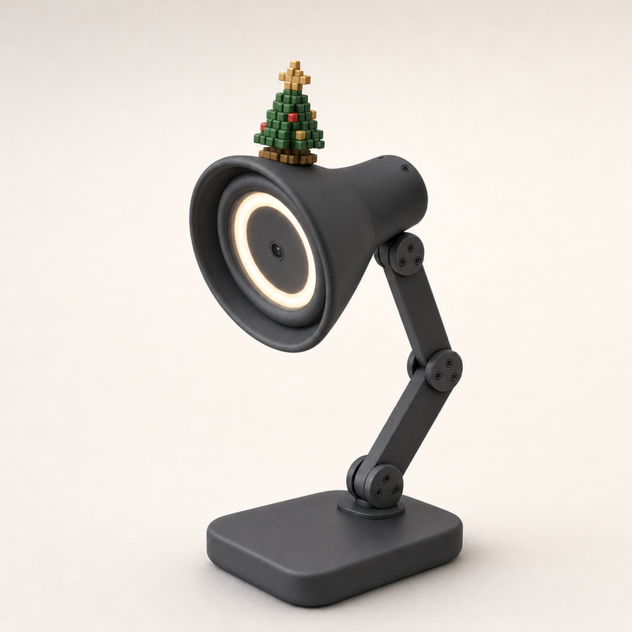<figcaption><b>W1 Pixel Tree</b><span class="sz">Mũ ~40–70 mm trên chụp đèn Ø155 mm</span><span>Cây thông 8-bit bằng khối vuông xanh, châu pixel đỏ vàng, sao pixel</span></figcaption></figure>
<figure>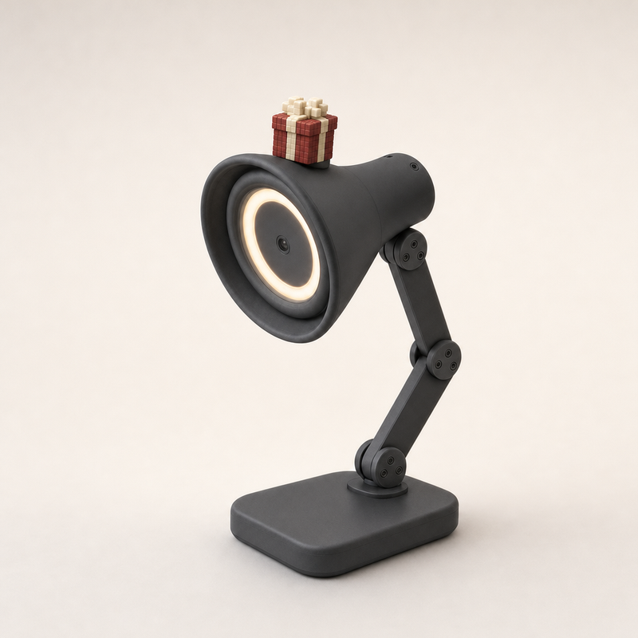<figcaption><b>W2 Pixel Gift</b><span class="sz">Mũ ~40–70 mm trên chụp đèn Ø155 mm</span><span>Hộp quà voxel đỏ, ruy băng và nơ pixel màu kem</span></figcaption></figure>
<figure>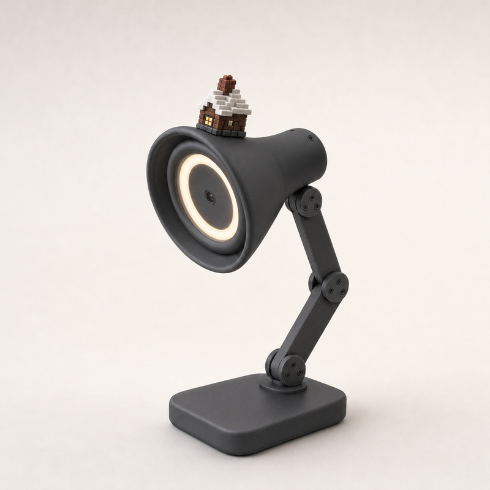<figcaption><b>W3 Pixel Cabin</b><span class="sz">Mũ ~40–70 mm trên chụp đèn Ø155 mm</span><span>Ngôi nhà gừng voxel tí hon: mái tuyết bậc thang, cửa sổ sáng, ống khói nhỏ</span></figcaption></figure>
<figure>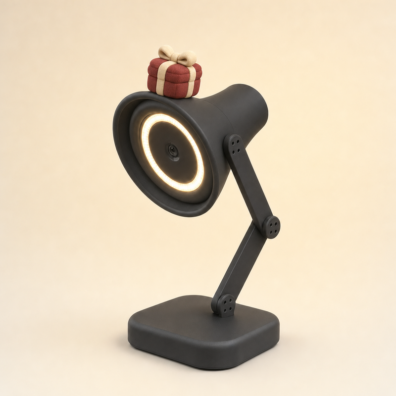<figcaption><b>W4 Plush Gift</b><span class="sz">Mũ ~40–70 mm trên chụp đèn Ø155 mm</span><span>Hộp quà phồng chần bông, ruy băng mập và nơ mềm</span><span class="flaw">Lỗi ảnh: nằm lùi về phía cổ đèn</span></figcaption></figure>
<figure>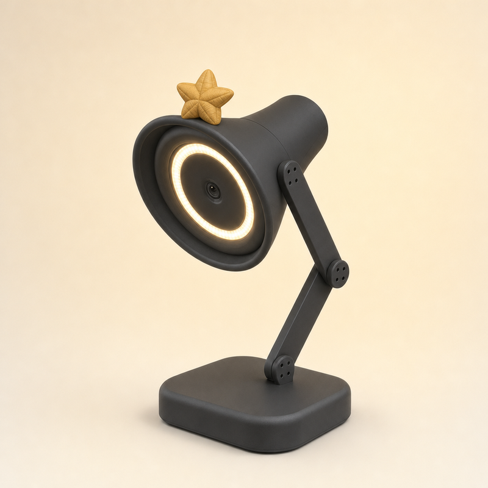<figcaption><b>W5 Plush Star</b><span class="sz">Mũ ~40–70 mm trên chụp đèn Ø155 mm</span><span>Ngôi sao vàng phồng đứng thẳng như ngọn cây thông, coi cái đèn là cây thông</span></figcaption></figure>
<figure>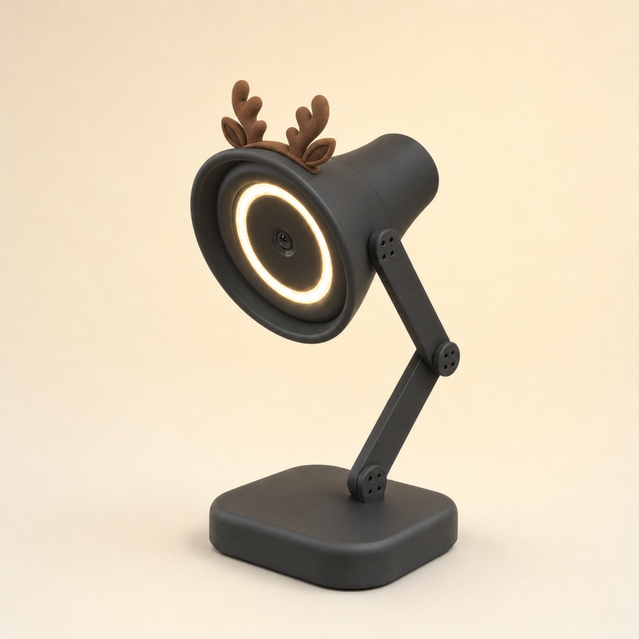<figcaption><b>W6 Soft Antlers</b><span class="sz">Mũ ~40–70 mm trên chụp đèn Ø155 mm</span><span>Cặp gạc tuần lộc nỉ mập tròn và hai tai nhỏ, không có mặt</span></figcaption></figure>
<figure>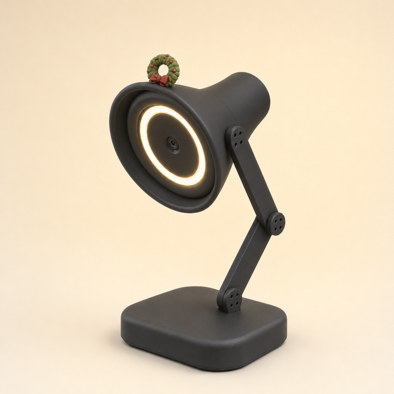<figcaption><b>W7 Plush Wreath</b><span class="sz">Mũ ~40–70 mm trên chụp đèn Ø155 mm</span><span>Vòng nguyệt quế xanh phồng đứng như vầng hào quang, quả đỏ và nơ đỏ</span><span class="flaw">Lỗi ảnh: Tạo lại một lần vì lần đầu nằm phẳng; vòng vẫn nhỏ</span></figcaption></figure>
<figure>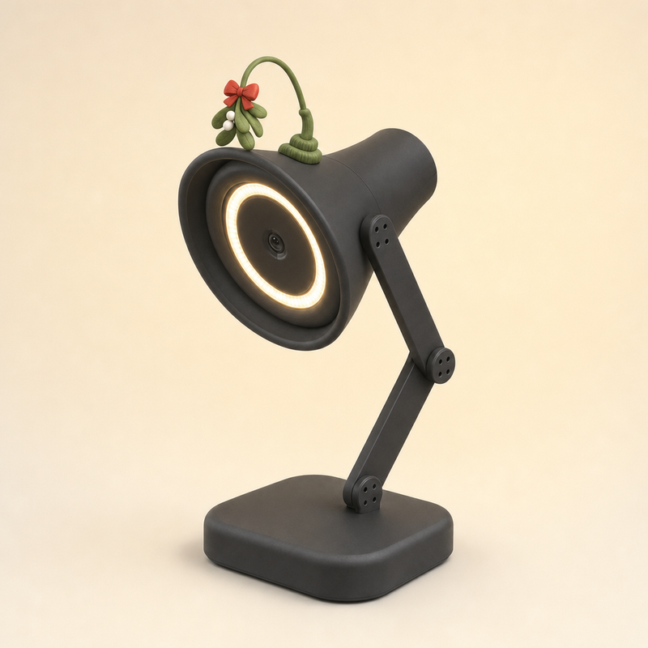<figcaption><b>W8 Mistletoe</b><span class="sz">Mũ ~40–70 mm trên chụp đèn Ø155 mm</span><span>Cành tầm gửi treo trên thân cong mềm, lá tròn, quả trắng, nơ đỏ</span><span class="flaw">Lỗi ảnh: Tạo lại một lần vì lần đầu không có thân; chân thân hơi giống lò xo</span></figcaption></figure>
</div></section>
<section><h2>Vòng 1: ống khói 8-bit + mũ mềm mại <small>L1–L8</small></h2><div class="grid">
<figure class="chosen">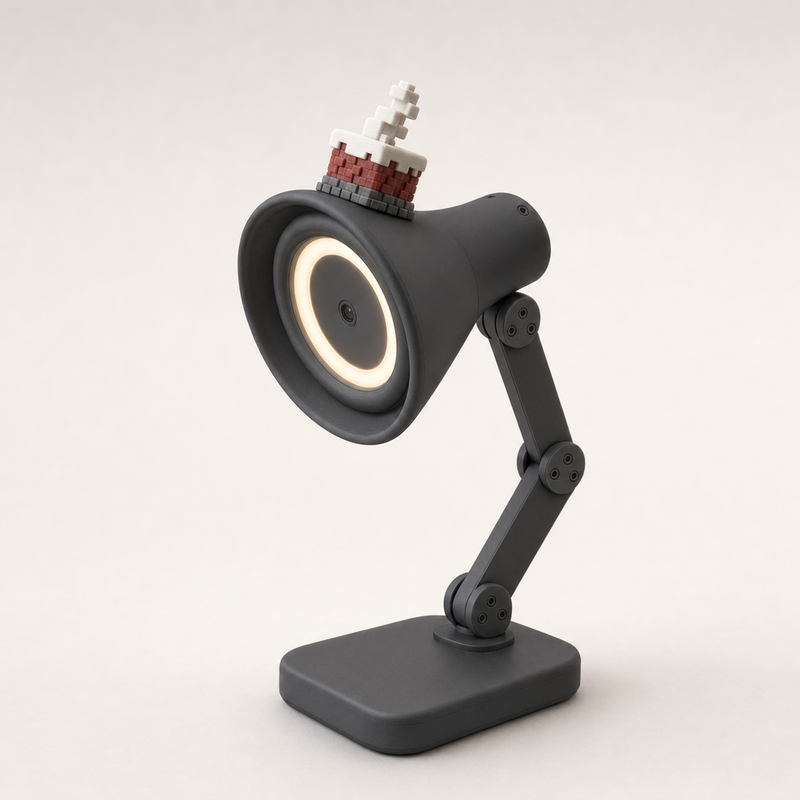<figcaption><span class="rec">Đã chọn</span><b>L1 Pixel Chimney</b><span class="sz">Mũ ~60–90 mm trên chụp đèn Ø155 mm</span><span>Ống khói 8-bit F8 của Intern chuyển sang đèn: gạch đỏ, tuyết pixel, khói pixel</span><span class="flaw">Lỗi ảnh: Tạo lại một lần vì lần đầu quá to; giờ hơi nhỏ, khói mảnh</span></figcaption></figure>
<figure>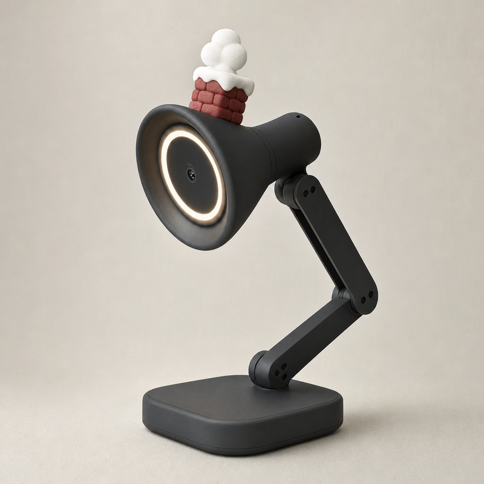<figcaption><b>L2 Soft Chimney</b><span class="sz">Mũ ~60–90 mm trên chụp đèn Ø155 mm</span><span>Ống khói tròn mập như kẹo marshmallow, tuyết phồng trên miệng, khói là ba cục bông tròn</span></figcaption></figure>
<figure>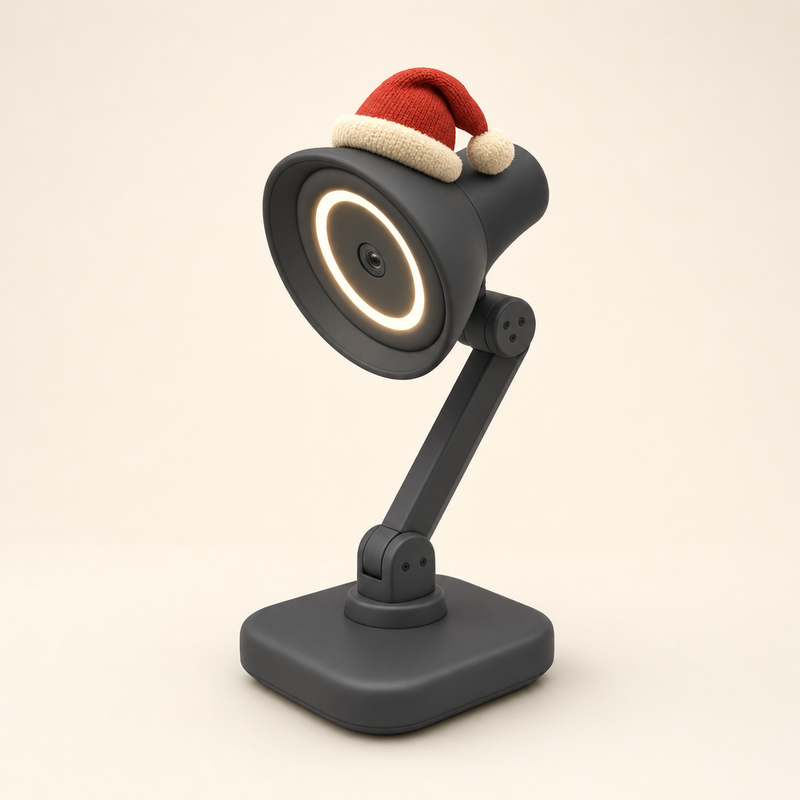<figcaption><b>L3 Slouchy Santa</b><span class="sz">Mũ ~60–90 mm trên chụp đèn Ø155 mm</span><span>Mũ Noel đỏ dáng mềm, viền lông kem phồng, chỏm gập ra sau với quả bông to</span><span class="flaw">Bỏ: một teammate đã làm mẫu này</span></figcaption></figure>
<figure>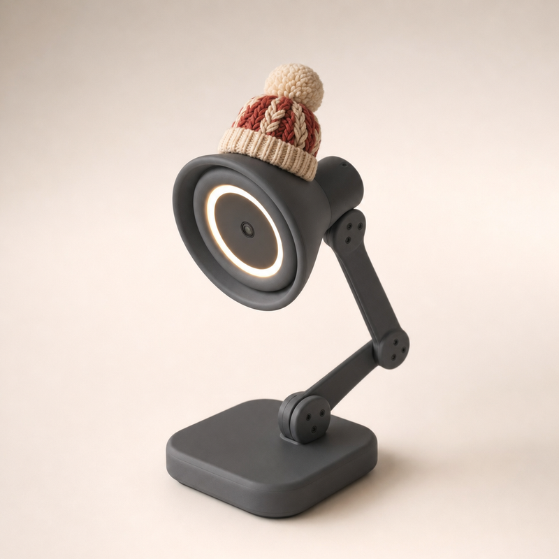<figcaption><b>L4 Chunky Knit</b><span class="sz">Mũ ~60–90 mm trên chụp đèn Ø155 mm</span><span>Mũ len đan thừng kem và đỏ, gấu gập, quả bông to xù</span></figcaption></figure>
<figure>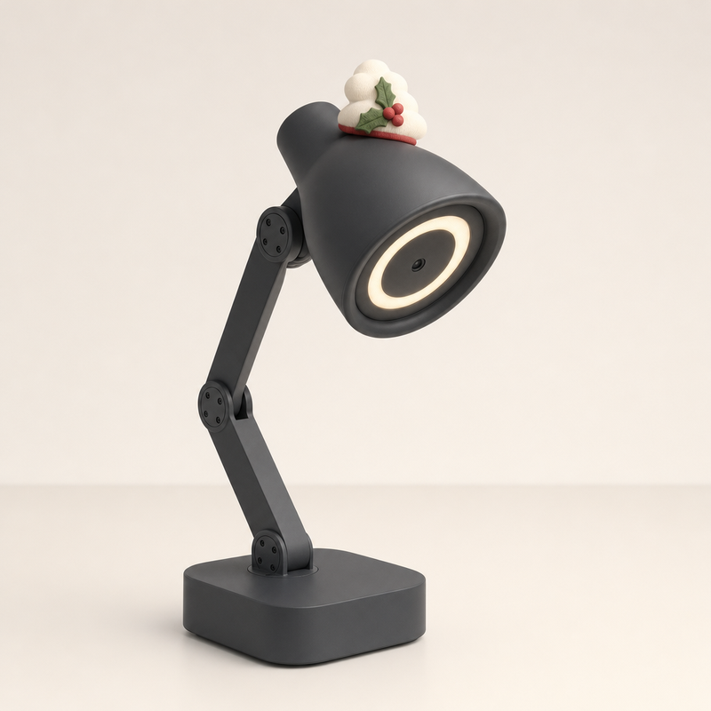<figcaption><b>L5 Snow Cloud</b><span class="sz">Mũ ~60–90 mm trên chụp đèn Ø155 mm</span><span>Một gối tuyết phồng như đám mây, cài cành nhựa ruồi và ba quả đỏ</span><span class="flaw">Lỗi ảnh: Tạo lại một lần vì lần đầu trùm cả đầu đèn; giờ nằm lùi về phía sau, không sát mép trước</span></figcaption></figure>
<figure>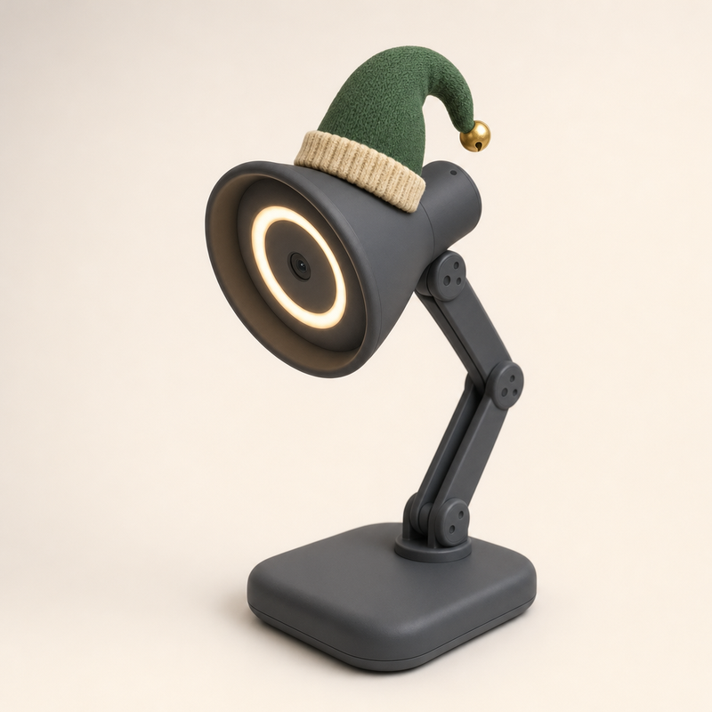<figcaption><b>L6 Elf Nightcap</b><span class="sz">Mũ ~60–90 mm trên chụp đèn Ø155 mm</span><span>Mũ ngủ elf xanh rêu, đuôi dài cong chữ S ra sau, đầu có chuông vàng</span></figcaption></figure>
<figure class="chosen">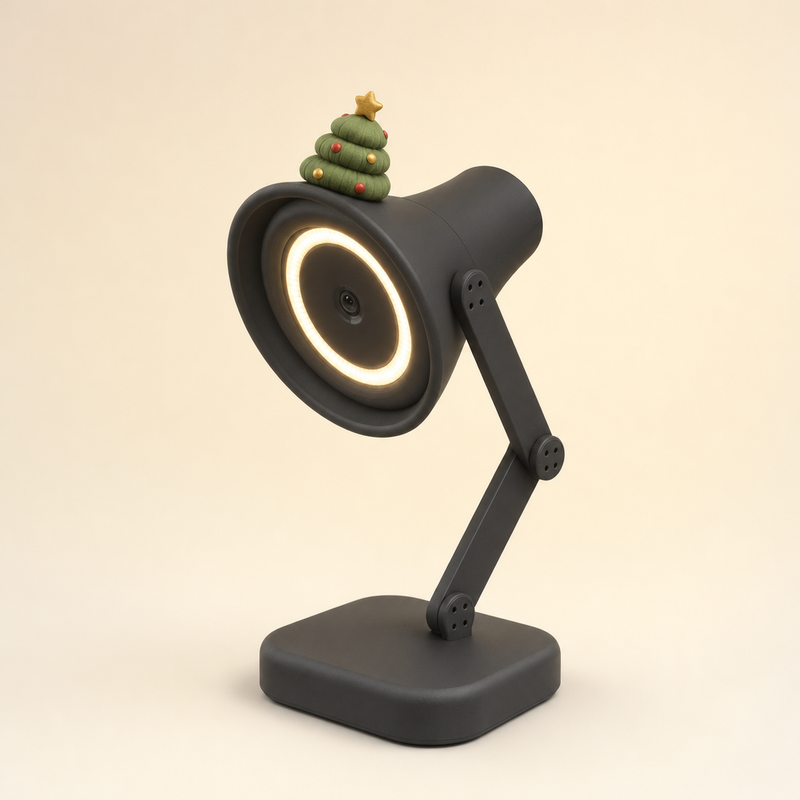<figcaption><span class="rec">Đã chọn</span><b>L7 Plush Tree</b><span class="sz">Mũ ~60–90 mm trên chụp đèn Ø155 mm</span><span>Cây thông ba tầng phồng như gối chần bông, quả châu đỏ vàng, sao vàng tròn</span><span class="flaw">Lỗi ảnh: Tạo lại một lần vì lần đầu trùm cả đầu đèn</span></figcaption></figure>
<figure>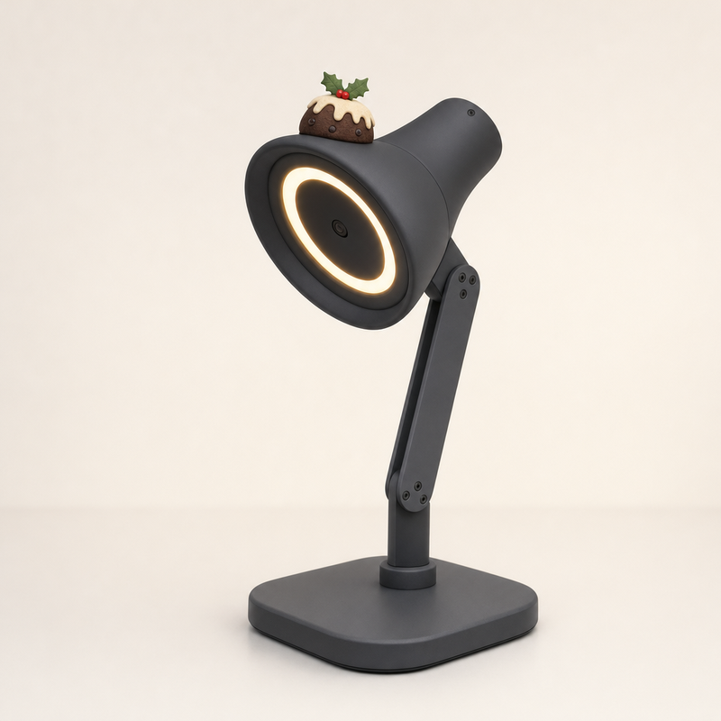<figcaption><b>L8 Pudding Cap</b><span class="sz">Mũ ~60–90 mm trên chụp đèn Ø155 mm</span><span>Bánh pudding Giáng sinh: vòm nâu có nho khô, kem trắng chảy tròn, nhành nhựa ruồi</span><span class="flaw">Lỗi ảnh: Tạo lại một lần vì lần đầu quá to</span></figcaption></figure>
</div></section></main>
